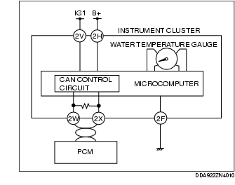

Water temperature gauge control construction/operation
System Wiring Diagram

Operation
• The engine coolant temperature signal sent from the PCM via the CAN system is input to the microcomputer in the instrument cluster. The microcomputer calculates the current engine coolant temperature based on the engine coolant temperature signal, and sends an output signal to the water temperature gauge.